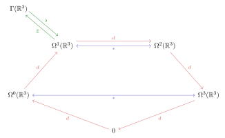
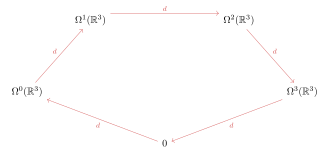
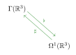
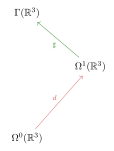
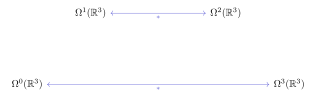
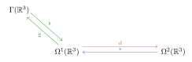
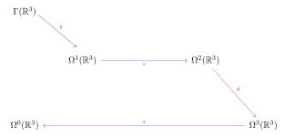
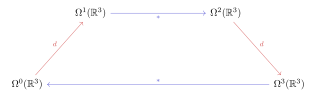

There is Only One Derivative
- Introduction
- The de Rham Complex
- The Musical Isomorphism
- Recovering the Gradient
- The Hodge Star
- Recovering the Curl
- Recovering the Divergence
- Bonus Results
- References
Introduction
Those who are fortunate enough to have taken a course in multivariable calculus, or vector calculus, are likely familiar with the three “derivative-like” operators: gradient, curl, and divergence. In this writeup, I aim to demonstrate that these three are actually all the same thing, the exterior derivative, just given a different name. Meta-mathematically, the goal of this writeup is to demonstrate that every definition involved makes perfect sense: things could not be defined in another way, even if we wanted to!
The write-up (and title!) are deeply inspired by this excellent video made by Giovanni Bracchi. I first watched this video when in second year of undergrad, and understood it only on a surface level; it was not until I took a course in differential topology a couple years later that the concepts clicked.
I will assume the reader has seen some vector calculus, and more importantly, has some familiarity with differential forms and the exterior derivative. If the sentence, “A \(1\)-form \(\om\) on a smooth manifold \(M\) is a smooth section of \(T^*M\)” does not make sense to you, then this blog post may be difficult to follow.
The fundamental diagram that one should keep in mind during the discussion that follows is:

and is also sourced from Giovanni’s video.
The de Rham Complex
Cochain Complexes
Definition. A Cochain complex is a sequence of modules \(A^0, A^1, A^2,\ldots\) all over the same fixed ring \(R\), along with a sequence of \(R\)-module homomorphisms \(d^n: A^n \to A^{n+1}\) that satisfy \(d^{n+1}\circ d^n = 0\). The maps \(d^n\) are called differentials, or boundary operators.
As the name suggests, cochain complexes are dual to chain complexes, which are essentially the same, except the boundary operator changes directions.
de Rham Complex
Definition. Let \(M\) be a smooth manifold. The de Rham complex is the cochain complex of differential forms on \(M\), with differentials given by the exterior derivative:
In the de Rham Complex, the \(A^k\) are \(\RR\)-modules (indeed, they are real vector spaces), and it can be shown, essentially by definition of \(d\) and the wedge product \(\wedge\), that \(d^2 = 0\), so the de Rham complex is indeed a cochain complex.
de Rham Complex in \(\RR^3\)
In \(\RR^3\), there are no non-zero differential forms of degree larger than \(3\). In particular, \(\Om^p\left(\RR^3\right)\cong 0\) for \(p>3\), so we can write the de Rham complex in \(\RR^3\) as:

which is the portion of Figure 1 highlighted in red. This is the fundamental framework underlying differential topology; the de Rham complex, or more generally, de Rham cohomology, allows us to compute a powerful topological invariant of smooth manifolds, namely the de Rham cohomology groups.
It is always true that if \(\theta\) is any \(p\)-form, and \(\theta = d\omega\) for some \(\left(p-1\right)\)-form \(\om\), then \(d\theta = 0\). But what if we only know that \(d\theta = 0\), then what can be said about \(\theta\)? This motivates the following definitions:
Definition. A closed form is a form \(\omega\) such that \(d\omega = 0\).
Definition. An exact \(p\)-form is a form \(\theta\) such that \(\theta=d\eta\) for some \(\left(p-1\right)\)-form \(\eta\).
In some sense, to answer the question posed about \(\theta\), we only care about \(\theta\) up to what the exterior derivative \(d\) is able to “detect”, for if \(\eta\) is an exact form then \(d\theta = d\left(\theta+\eta\right) = 0\) for any closed form \(\theta\). So, one can define an equivalence relation on closed \(p\)-forms via \(\theta\sim\theta'\) if and only if \(\theta = \theta' + d\eta\) for some \(\left(p-1\right)\)-form \(\eta\).
The collection of closed \(p\)-forms modulo the exact forms becomes a group, denoted by \(H^p\left(M\right)\), under pointwise addition, and the collection† † More than a collection of groups, \(H^*\left(M\right)\) is actually a graded \(\RR\)-algebra: the grade is the degree of form, and the map between grades is the wedge product. \(H^*\left(M\right)\) of these groups are collectively called the de Rham cohomology groups of \(M\).
Although it is not necessarily clear just from the above discussion, the de Rham cohomology groups of a given manifold provide profound insights into its differential-topological structure. For instance:Lemma (Poincaré). If \(n > 0\), then \[H^*\left(\RR^n\right) \cong \begin{cases}\RR &\text{if $*=0$}\\ 0 &\text{otherwise} \end{cases}\]
This result is often realized in vector calculus as a statement along the lines of: “every irrotational vector field defined on a simply-connected (or convex) domain is conservative”. In later sections, we shall see why this statement is a consequence of the more general Poincaré Lemma written above.
But first, to understand fully Figure 1, and hence to truly bridge the gap from differential topology to vector calculus, we must introduce a Riemannian metric: both the green maps, \(\flat\) and \(\sharp\), as well as the purple Hodge star operator \(*\), depend on a metric.
The Musical Isomorphism
We begin with some motivation from linear algebra.
Linear Algebra
Let \(V\) be a finite-dimensional vector space over \(\RR\). It is well-known that \(V\) is isomorphic to its dual space \(V^*\), the finite-dimensional vector space of linear functionals on \(V\). Let \(e_1,\ldots, e_n\) be a basis for \(V\). Then any vector \(v\in V\) can be represented as a column vector \(\begin{pmatrix}v_1, v_2,\ldots, v_n\end{pmatrix}^T\) in this basis, and the natural map between \(V\) and \(V^*\) is given by the transpose: i.e., we represent linear functionals by row vectors. But notice that this isomorphism is not canonical: we had to first pick a basis. We can try to do something more general by defining:
Definition. A non-degenerate bilinear form \(g:V\times V\to \RR\) is a map from \(V^2\) to \(\RR\) that is \(\RR\)-linear in each component, and satisfies \(g\left(v,w\right) = 0\) for all \(w\) if and only if \(v=0\).
Now, suppose that our vector space \(V\) comes equipped with a non-degenerate bilinear form \(g\). Then \(V\) is canonically isomorphic to \(V^*\) via
\[v\mapsto g\left(v,\cdot\right).\]
Note that non-degeneracy is required in order for this correspondence to be an isomorphism, or else injectivity fails!
Example. We may equip the vector space \(\RR^n\) with the standard dot product, which is a non-degenerate bilinear form, and thereby obtain a natural isomorphism from \(\RR^n\) to \(\left(\RR^n\right)^*\).
Riemannian Manifolds
Much of differential topology aims to extend results from linear algebra to non-linear spaces. In that spirit, let \(M\) be an \(n\)-dimensional smooth manifold. Recall here that our goal is to define a canonical isomorphism between (smooth) vector fields and one-forms: the former is a smoothly varying choice of vector at each point, while the latter is a smoothly varying choice of covector (or linear functional) at each point. It is natural, then, to define an isomorphism between tangent spaces and their duals.
Definition. A Riemannian metric \(g\) is a smooth family of symmetric positive-definite bilinear forms on \(TM\), and hence gives an isomorphism of tangent bundles between \(TM\) and \(T^*M\).
In other words, for each \(p\in M\), \(g|_p: T_pM\to T_p^*M\) is defined by \(g|_p\left(v\right) = \inprod{v}{\cdot}\) induces an isomorphism of the real vector space \(T_pM\) with its dual \(T_p^*M\), just as above, and \(g|_p\left(v\right)\) varies smoothly as we move \(p\) around \(M\).
Example. Let \(M=\RR^3\). Then at each \(p\in M\), we have \(T_pM\cong \RR^3 \cong T_p^*M\), and the standard Euclidean product \[\inprod{\left(v_1, v_2, v_3\right)}{\left(w_1,w_2,w_3\right)} = v_1w_1 + v_2w_2 + v_3w_3\] defines a (constant) Riemannian metric on \(M\). In other words, we identify each basis vector \(e_i\), for \(1\le i\le 3\), with the linear functional \(\inprod{e_i}{\cdot}\).
It is this Riemannian metric that we shall use for the rest of the write-up. We are now ready to define the musical isomorphism; the work we have done thus far shall soon bear fruit as we recover the gradient of a smooth function.
The \(\flat\) operator
Definition. Let \(F=\left(F_1,F_2,F_3\right)\in \Gamma(\RR^3)\) be any smooth vector field. Then its flat is the \(1\)-form given by \[\flat\left(F\right) = F^\flat := F_1dx_1 + F_2dx_2 + F_3dx_3 \in \Om^1(\RR^3)\]
The \(\sharp\) operator
Definition. Let \(\alpha = f_1dx_1 + f_2dx_2 + f_3dx_3 \in \Om^1(\RR^3)\) be any \(1\)-form. Then its sharp is the vector field given by \[\sharp\left(\alpha\right) = \alpha^\sharp := \left(f_1, f_2, f_3\right)\in\Gamma(\RR^3)\]
The musical isomorphism is encapsulated by the following simple diagram:

which is the portion of Figure 1 highlighted in green.
Where in these definitions does the Riemannian metric appear? This is a good question to ponder before moving on.
The answer is that \(\inprod{\cdot}{\cdot}\) provides an identification of basis vectors \(e_i\) with \(\inprod{e_i}{\cdot}\), the latter of which acts identically to the \(1\)-form \(dx_i\). Thus, the above correspondence is merely† † This definition illustrates a motif in elementary differential topology: for almost all definitions, there is only one way to define things that makes sense. Oftentimes, one simply does the most natural thing. In linear algebra, if you are given a vector and want to produce a linear functional, take the transpose. In differential geometry, if you are given a \(1\)-form and want to make a vector field, just use the same components. saying:
- if you start with a vector field \(F\), take the components of \(F\) and make those the components of your one-form in the dual basis \(dx_1, dx_2, dx_3\) of \(\Om^1(\RR^3)\).
- if you start with a one-form \(f_1dx_1+f_2dx_2+f_3dx_3\), take those components \(f_i\) and make them the components of your vector field, in the dual basis \(e_1, e_2, e_3\) of \(\RR^3\).
Recovering the Gradient
We now have everything we need to recover the gradient of a smooth function. Recall:Definition. If \(f:\RR^3\to\RR\) is any smooth function, then its gradient at a point \(p\) is \[\nabla f\left(p\right) = \left(\partial_1 f\left(p\right), \partial_2 f\left(p\right),\partial_3f\left(p\right)\right)\] Sometimes we also write \(\grad f\left(p\right)\).
Proposition. \[\grad = \sharp d\]
Let \(f\) be any smooth function, so \(f\in \Om^0(\RR^3)\). By definition of exterior derivative, we have \[df = \frac{\partial f}{\partial x_1}dx_1 + \frac{\partial f}{\partial x_2}dx_2 + \frac{\partial f}{\partial x_3}dx_3 \in \Om^1(\RR^3).\] Hence by definition of \(\sharp\), we have \[\sharp df = \left(df\right)^\sharp = \left(\frac{\partial f}{\partial x_1}, \frac{\partial f}{\partial x_2}, \frac{\partial f}{\partial x_3}\right) = \grad\left(f\right).\]
In fact, we can sweep \(\sharp\) under the rug and simply conflate vector fields and one-forms from the get-go, by conflating vectors and covectors in Euclidean space† † As one does., to obtain:Heuristic. \[\grad = d: \Om^0(\RR^3) \to \Om^1(\RR^3)\]
So the gradient is simply the exterior derivative \(d\), mapping from \(0\)-forms to \(1\)-forms.
The gradient can be viewed, in the context of Figure 1, as the following composition of operators:
The Hodge Star
Before we recover the curl and divergence operators, we need to introduce one final linear map: the Hodge star operator, \(*\).
Motivation
The Hodge star operator is related to the cross product from linear algebra. Given two vectors \(u,v\), their cross product \(u\times v\) lies in \(\operatorname{span}\{u,v\}^\perp\), and \(\left(u,v,u\times v\right)\) is a positively-oriented basis of \(\RR^3\). So, given any pair of vectors, the cross product tells us their “complement” with respect to a positively-oriented basis of \(\RR^3\), i.e., it answers the question, “which vector can we append to \(\{u,v\}\) to get a positively-oriented basis of \(\RR^3\)?” It turns out that the Hodge star answers a very similar question for differential forms.
Hodge Star Heuristic
Rather than give the formal definition of the Hodge star operator, we will instead give an informal definition inspired by the heuristic above, and reserve our commentary to the manifold \(M=\RR^3\).
Informal Definition. Let \(0\le p\le 3\), and let \(\alpha \in \Om^p\left(\RR^3\right)\). Then the Hodge star operator \(*\) is a linear map \(\Om^p\left(\RR^3\right)\to \Om^{3-p}\left(\RR^3\right)\), and \(*\alpha\) is defined to be the unique \(\left(3-p\right)\)-form such that \[\alpha\wedge \left(*\alpha\right) = dx_1\wedge dx_2\wedge dx_3.\]

This is the portion if Figure 1 highlighted in purple.
Example. Hodge complements are easy to compute in \(\RR^3\), using that the wedge product is alternating, and that forms of degree more than \(3\) vanish:
- \(*1 = dx_1\wedge dx_2\wedge dx_3\)
- \(*dx_1 = dx_2\wedge dx_3\)
- \(*dx_2 = dx_3\wedge dx_1 = -dx_1\wedge dx_3\)
- \(*dx_3 = dx_1\wedge dx_2\)
Armed with the Hodge star in one hand and the exterior derivative in the other, we can now recover the curl and the divergence.
Recovering the Curl
Definition. Let \(F: \RR^3\to \RR^3\) be any smooth vector field with components \(F=\left(F_1,F_2,F_3\right)\). Then its curl† † Speaking informally, the quantity \(\curl F\cdot n\) can be interpreted as the extent to which the vector field \(F\) swirls around the vector \(n\). at a point \(p\) is given by
\[\curl F\left(p\right) = \left(\partial_2F_3 - \partial_3F_2, \partial_3F_1 - \partial_1F_3, \partial_1F_2 - \partial_2F_1\right)\]
Since the curl operator maps vector fields to vector fields, this gives us a hint for how we should decompose it into a composition of \(*\)s and \(d\)s. Moreover, the components of the curl look like a cross product, which suggests we definitely need to compute a \(*\) at some point. Indeed, there is only one definition that makes sense.
Proposition. \[\curl = \sharp*d\flat.\]
Let’s see why this is true by computing the right-hand-side on a vector field \(F=\left(F_1,F_2,F_3\right)\). First, we have \[F^\flat = F_1dx_1 + F_2dx_2+F_3dx_3\in\Om^1(\RR^3)\] Computing the exterior derivative: \[d\left(F^\flat\right) = \left(\frac{\partial F_3}{\partial x_2} - \frac{\partial F_2}{\partial x_3}\right)dx_2\wedge dx_3 + \left(\frac{\partial F_3}{\partial x_1} - \frac{\partial F_1}{\partial x_3}\right)dx_1\wedge dx_3 + \left(\frac{\partial F_2}{\partial x_1} - \frac{\partial F_1}{\partial x_2}\right)dx_1\wedge dx_2\in\Om^2(\RR^3)\] Applying the Hodge star operator: \[*\left(dF^\flat\right) = \left(\frac{\partial F_3}{\partial x_2} - \frac{\partial F_2}{\partial x_3}\right)dx_1 - \left(\frac{\partial F_3}{\partial x_1} - \frac{\partial F_1}{\partial x_3}\right)dx_2 + \left(\frac{\partial F_2}{\partial x_1} - \frac{\partial F_1}{\partial x_2}\right)dx_3 \in \Om^1(\RR^3)\] And finally, applying the \(\sharp\) operator: \[\left(*dF^\flat\right)^\sharp = \left(\frac{\partial F_3}{\partial x_2} - \frac{\partial F_2}{\partial x_3}, \frac{\partial F_1}{\partial x_3} - \frac{\partial F_3}{\partial x_1}, \frac{\partial F_2}{\partial x_1} - \frac{\partial F_1}{\partial x_2}\right) = \curl\left(F\right)\in\Gamma(\RR^3)\]
Heuristic. \[\curl = d:\Om^1(\RR^3)\to\Om^2(\RR^3)\]

By identifying 1 and 2 forms using the Hodge star, \(\curl\) takes in a vector field, which we can identify with a \(1\)-form, and then outputs another vector field, which we identify with a \(2\)-form (by first identifying with a \(1\)-form, and then Hodge-starring).
Recovering the Divergence
Definition. Let \(F:\RR^3\to\RR^3\) be a smooth vector field with components \(F=\left(F_1,F_2,F_3\right)\). Its divergence† † Speaking informally, the quantity \(\div F\left(p\right)\) can be interpreted as the extent to which the vector field “emanates from \(p\)”. If this quantity is negative, then \(F\) has a tendency to “go into” \(p\). at a point \(p\) is given by \[\div F\left(p\right) = \partial_1 F_1 + \partial_2 F_2 + \partial_3 F_3\]
This time, we are taking in a vector field, and outputting a scalar field. We can assume the previous pattern probably holds, and that \(\div\) will be an analogue of \(d:\Om^2(\RR^3)\to\Om^3(\RR^3)\). So, we need to start in \(\Gamma(\RR^3)\), and then end up in \(\Om^0(\RR^3)\). Certainly the first step must be \(\flat\). We also want to incorporate \(3\)-forms somehow: we can get from \(\Om^1(\RR^3)\) to \(\Om^3(\RR^3)\) either by taking \(d^2\) or by taking \(d*\). Since the de Rham complex is a cochain complex, we should be reticent to take \(d^2\) unless we are committed to having the divergence of every vector field equal to zero. After landing in \(\Om^3(\RR^3)\), we can just take the Hodge star back to \(\Om^0(\RR^3)\), the space of smooth functions. This leads us to the formula:
Proposition. \[\div = *d*\flat.\]
As usual, we shall apply the right-hand-side to \(F=\left(F_1,F_2,F_3\right)\in\Gamma(\RR^3)\). Luckily, the computation is simpler than the computation for curl! First, \[F^\flat = F_1dx_1 + F_2dx_2+F_3dx_3\in\Om^1(\RR^3)\] Then, we have \[*\left(F^\flat\right) = F_1dx_2\wedge dx_3 - F_2 dx_1\wedge dx_3 + F_3dx_1\wedge dx_2 \in \Om^2(\RR^3)\] Applying the exterior derivative: \[d\left(*F^\flat\right) = \left(\frac{\partial F_1}{\partial x_1}+\frac{\partial F_2}{\partial x_2} + \frac{\partial F_3}{\partial x_3}\right)dx_1\wedge dx_2\wedge dx_3\in\Om^3(\RR^3)\] And finally, applying the Hodge star again: \[*\left(dF^\flat\right) = \frac{\partial F_1}{\partial x_1}+\frac{\partial F_2}{\partial x_2}+\frac{\partial F_3}{\partial x_3} = \div\left(F\right)\in\Om^0(\RR^3)\]
Heuristic. \[\div = d: \Om^2(\RR^3)\to\Om^3(\RR^3)\]

This is true in the sense that we identify \(2\)-forms with \(1\)-forms, and then \(1\)-forms with vector fields, and identify \(3\)-forms with smooth functions. We have now recovered the three famous “derivative-like” operators from vector calculus as instantiations of the derivative!
As a bonus, let us recover the Laplacian operator, as well as some famous results from the vector calculus.
Bonus Results
Recovering the Laplacian
Definition. Let \(f:\RR^3\to\RR\) be at least a \(C^2\) function. Better yet, let \(f\in \Om^0(\RR^3)\). Then its Laplacian is defined by \[\Delta f := \div\left(\grad f\right) = \partial_1^2f+\partial_2^2f+\partial_3^2f\]
One often illustratively writes \(\Delta f = \nabla \cdot \left(\nabla f\right)\), even though this notation does not make much sense. Or does it?
Proposition. \[\Delta = *d*d\]
We actually don’t need any computations here, because \(\flat\) and \(\sharp\) are mutual inverses, so \[\Delta = \div\grad = *d*\flat\sharp d = *d*d\] for free.
The Laplacian can be viewed, in the context of Figure 1, as the following composition of operators:
Recovering Famous Vector Calculus Facts
From the identity \(d^2=0\), we can recover a couple well-known facts from vector calculus.
Corollary. \[\curl\grad = 0\]
Computing the left-hand-side gives \[\curl\grad = \sharp*d\flat \sharp d = \sharp *d^2 = 0\]
Corollary. \[\div\curl = 0\]
Computing the left-hand-side gives \[\div\curl = *d*\flat\sharp*d\flat = *d*^2d\flat = *d^2\flat = 0\] Note that we used that \(*^2\) is the identity on \(\RR^3\), which is a non-obvious fact that can be verified by an elementary computation.
Corollary. If \(F:R\to \RR^3\), where \(R\subseteq \RR^3\) is convex (or simply-connected), then \(F\) is irrotational if and only if \(F\) is conservative.
This follows from the Poincaré Lemma. Above, we saw that \(\curl\) and \(\grad\) are both manifestations of \(d\). So this statement is equivalent to the fact that \(H^1\left(\RR^3\right)\cong 0\), i.e. that every closed \(1\)-form on \(\RR^3\) is exact.
References
- The original video by Giovanni Bracchi
- Notes on Differential Topology by Alexander Kupers , which do not seem to be uploaded.